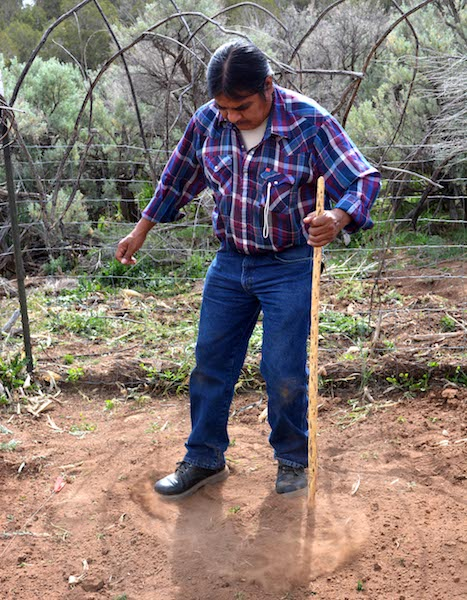

5.1 Procedure
Planting

Using a traditional Hopi planting stick, or so’ya.
The primary tool for planting is a planting stick or, in the Hopi language, a so’ya. Traditionally a so’ya is made from greasewood (Sarcobatus vermicalatus), but some planting sticks today are made from a length of metal pipe with a narrow blade welded to one end.
Planting begins by using your foot to scrape away the upper layer of loose, dry dirt. This exposes the top of the underlying hard-packed soil. About a square foot area is cleared. The planter gets down on one knee and grabs the so’ya with one hand low and one hand higher up on the tool. A narrow hole is dug using a pulling motion toward the planter. Typically, the hole is dug to a depth of about 8 to 10 inches or to the depth where good soil moisture is encountered. The hole is dug deeper if the soil is drier and shallower if the soil is moist. This soil moisture is critical for plant germination and for the plant to be able to grow until there is more precipitation, which might not occur until many weeks after planting.
Hopi farmers plant corn in clumps. 10–20 seeds are deposited into the hole. The excavated earth is put back gently into the hole in the order it was removed with the moist soil covering the seeds on the bottom and the drier soil on top. The loose dry dirt is on the top, but a small basin is created on the surface to collect any precipitation that falls and to create a dust mulch that reduces evaporation.
The farmer stands and takes two or three steps to measure where the next clump of corn will be planted. Because the soils in the PFP gardens hold a bit more moisture than those soils near the Hopi mesas, the PFP clumps are typically spaced about 1.5–1.75 meters apart rather than the three-meter spacing typically used at Hopi. The wide spacing of the planted clumps reduces competition for valuable sub-surface moisture.
Flick through these slides to see how planting is done the Hopi way! The descriptions are based on Notes On Hopi Economic Life by Earnest Beaglehole, 1937.



Monitoring

Paul Ermigiotti records the growth of maize in the Check Dam Garden.
The procedures for monitoring PFP gardens were based on those developed by Benjamin Bellorado in an experimental gardening study that he developed for the Animas-LaPlata archaeological project and for his MA thesis at Northern Arizona University. For the majority of the PFP these procedures were implemented by Paul Ermigiotti and staff and volunteers who assisted him.
Monitoring was conducted each week. The primary objectives were to record growth stages, to document damage by pests, and to make other observations about the condition of the gardens. The data were recorded on paper forms in the field and later put into a database.
The data collected each week on growth stages includes the following:
- Height — The height of the tallest plant in each clump was recorded to the nearest 5 cm.
- Early Tassel Development — Early tassel development was recorded when it occurred on any plant in a clump. Early tassel development is defined as the time when the tassel bud starts to emerge from the central enclosing leaves at the top of the stalk to the time the tassel spike begins to branch.
- Tassel Development — Tassel development was recorded when it occurred on any plant in a clump. Tassel development begins when the tassel emerges from the central cluster of leaves and begins to branch. This stage ends when the anthers (male flowers) emerge from the glumes of the tassel and the pollen begins to shed.
- Tasseling — The period of tasseling was recorded when it occurred on any plant in a clump. The tasseling period is when the apex inflorescences (a group of flowers) begin to open. The anthers (male flowers) emerge and begin to shed pollen. At this stage the stalk has produced all its leaves, and the plant has reached full height.
- Silk Development — Silk development was recorded when it occurred on any plant in a clump. Silk development is when ear shoots become visible in the nodes (between the leaf and stalk) until the silks have fully emerged and are ready to receive pollen.
- Silking — Silk development was recorded when it occurred on any plant in a clump. Silking is when the silk has emerged from the husk surrounding the developing cob and is capable of receiving pollen. A single silk will deliver pollen and develop into individual kernel. Once the silks have begun to dry and shrivel, this growth stage has ended.
- Ear Development — Ear development was recorded when it occurred on any plant in a clump. Ear development begins once the silks have dried out, shriveled, and are no longer accepting pollen and continues until the kernels mature and the ear is ready to harvest. A hard frost (below 28ºF.) will prematurely end ear development.
Harvesting

Harvesting maize.
The harvest and yield data entry for the Pueblo Farming Project is a three-step process that includes collecting the corn from the field, weighing the ears just after harvest, and, when they have dried completely, weighing the ears again to record the dry-kernel weight for each ear.
On harvest day, typically in mid-October after the ears have sufficiently ripened on the stalk, the farmers approach the garden with anticipation. All of the ears from each stalk in a clump are shucked, the silk is removed, and the ears are recorded and tagged according to the clump, stalk, and ear. After the ears are collected from a clump the stalks are bent over at the base and laid to rest on the ground. This laying to rest of the stalks is part of the life process that cycles through birth, maturation, and death. The stalks left in the garden also help with the spacing in the next year’s planting. Planting between the stalks ensures that seeds are not planted in the same place two years in a row.

Harvesting maize and recording its attributes.
After harvest the ears are weighed to obtain a wet weight, because there is still considerable moisture remaining in the ears. The ears are then placed on trays and allowed to dry for two months.
When the ears have thoroughly dried, each ear is weighed with the kernels intact and after the kernels have been removed. Ear, cob, and kernel weights are entered into the data base. Additional information on the ear is also recorded such as the number of rows of kernels, kernel color, and the completeness of kernel filling on the ear. The categories describing the condition of the ear include:
- Full: more than two-thirds of the kernels are present
- Partial: one-third to two-thirds of the kernels are present
- Sparse: up to one-third of the kernels are present
- Immature: there are no kernels present on the cob